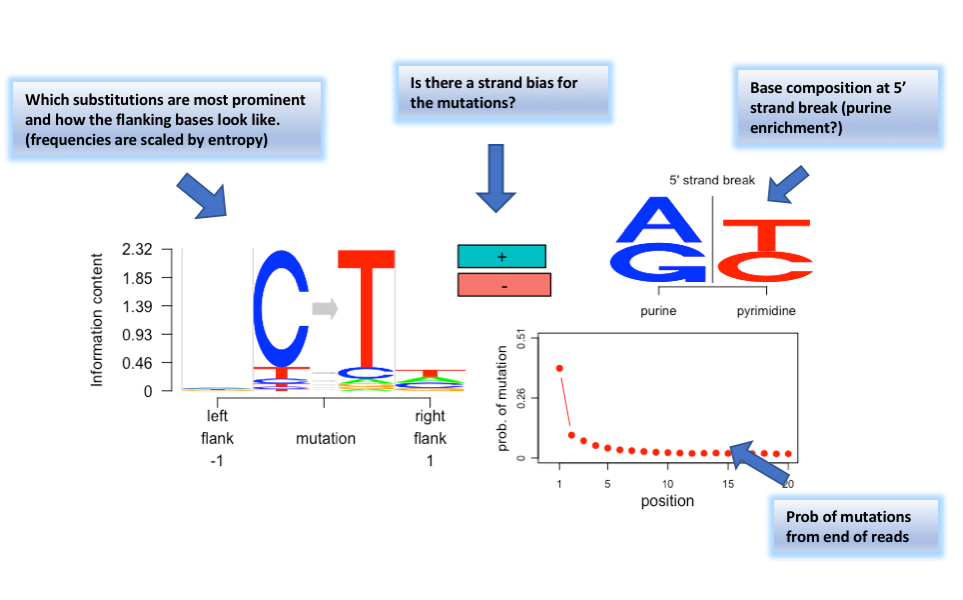

aRchaic is a R/python software package developed by Kushal K Dey and Hussein Al Asadi in collaboration with Matthew Stephens and John Novembre. aRchaic provides tools for clustering and visualization of ancient and/or modern DNA samples based on DNA damage patterns.
aRchaic fits a Grade of Membership (GoM) model, also popularly known as admixture model in population genetics, where each DNA sample (modern/ancient) is allowed to have memberships in multiple clusters. In our model, each cluster is determined by a specific DNA damage profile. aRchaic provides a STRUCTURE plot type visualization of the grades of memberships of the samples in the clusters and also a logo plot representation of the damage profile of each cluster. A demo visualization is provided below.

On the left is a vertical stacked bar chart with each bar representing a sample. The bar is of height 1 and is colored proportionately with the grades of membership in different clusters (there are 3 colors corresponding to 3 clusters in this case). On the right are the logo plot representations of the 3 clusters. A cluster logo plot has several components to it, each component highlighting some damage characteristics.

aRchaic also provides the user other exploratory tools to assess DNA damage - for example, tracking mutational patterns aross reads, frequency distribution of mutational flanking bases, read length distribution over reads with and without comprising of DNA damage etc. It also fits a classification GoM model to classify contaminated samples into "modern" and "ancient" classes, based on DNA damage profiles.
Check our documentation of all functions here and a tutorial demonstrating the application of aRchaic and its various functionalities on data.